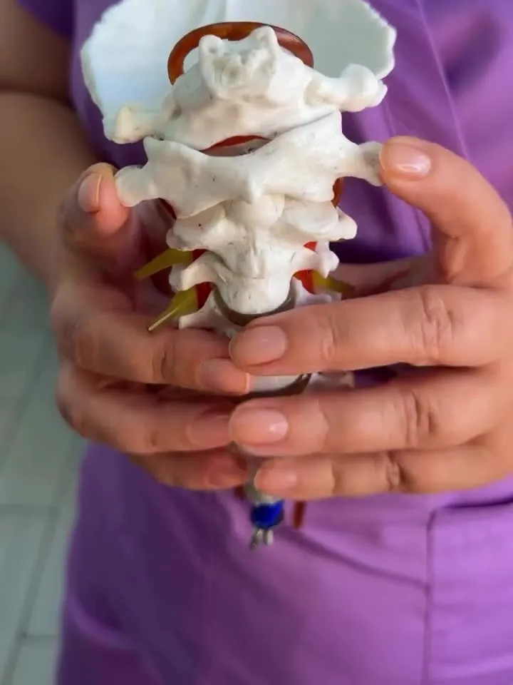
Правка атланта
Первый шейный позвонок C1
14 000 тг 7 000 тг приём врача
Осмотр и правка по методу Atlasprofilax. Без операций и таблеток.
Записаться на приёмМедицинский центр в Актау · 6 лет и более 17 000 пациентов
Метод Atlasprofilax. Приём врача - 7 000 тг вместо 14 000, программа восстановления - от 140 000 тг.
Отзывы пациентов в InstagramУслуги

Правка атланта
14 000 тг 7 000 тг приём врача
Осмотр и правка по методу Atlasprofilax. Без операций и таблеток.
Записаться на приём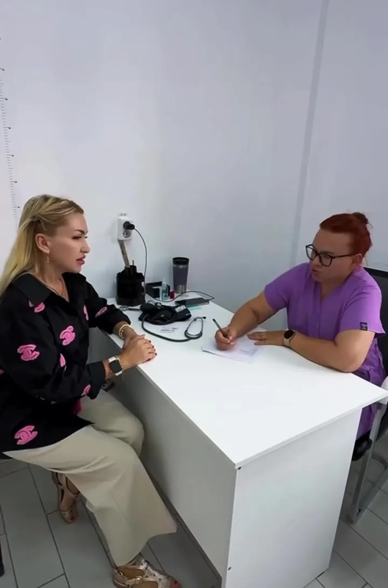
Программа восстановления
от 140 000 тг договор на 6-12 месяцев
Правка, массаж и физиолечение по одному плану врача.
Узнать о программе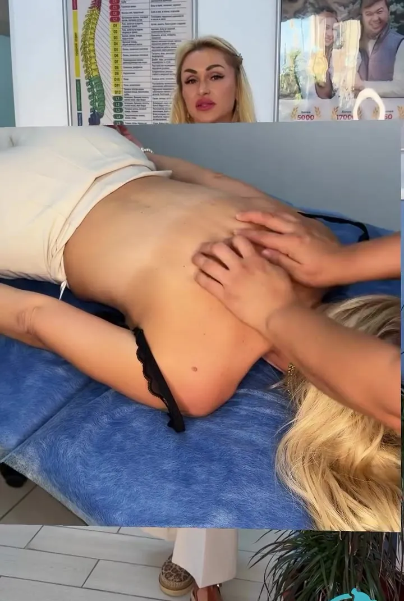
Массаж
курсом по назначению врача
Снимает напряжение мышц и закрепляет результат правки.
Узнать ценуФизиолечение
по показаниям после осмотра
Электрофорез, ударно-волновая терапия. Курс подбирает врач - по состоянию, а не по шаблону.
С чем приходят
Атлант держит голову и задаёт положение всего позвоночника. Его смещение часто стоит за жалобами, которые годами лечат по отдельности.
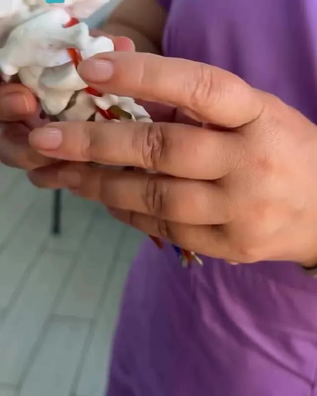
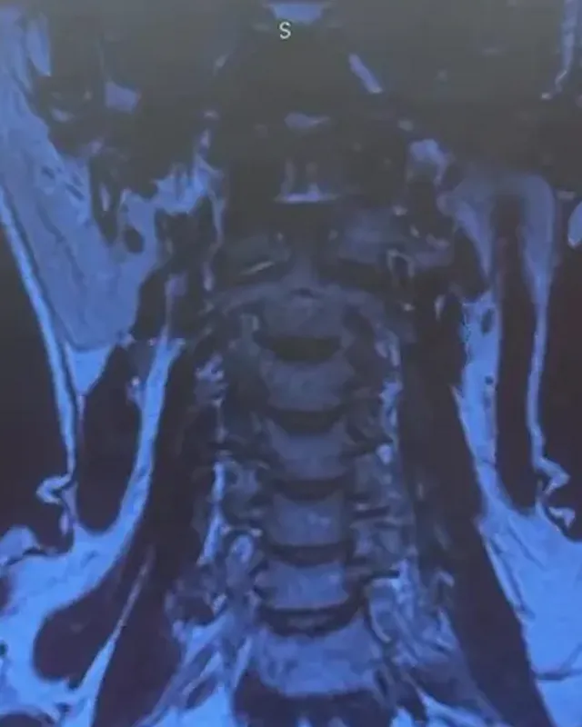
Имеются противопоказания. Нужна консультация врача: показания к правке определяются на приёме.
Причины смещения
У взрослых и у детей. Иногда причина - давняя травма, о которой человек уже забыл.
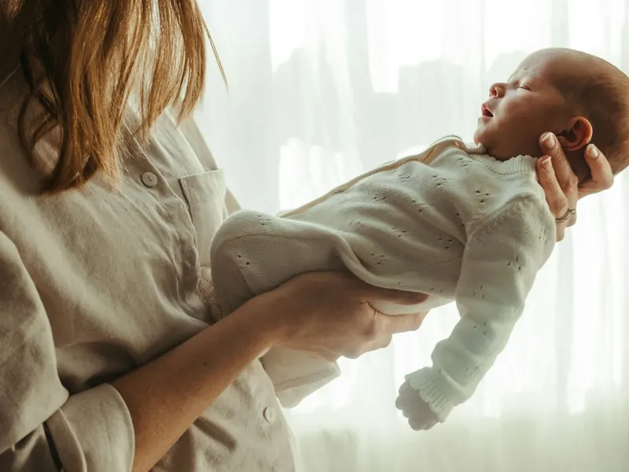
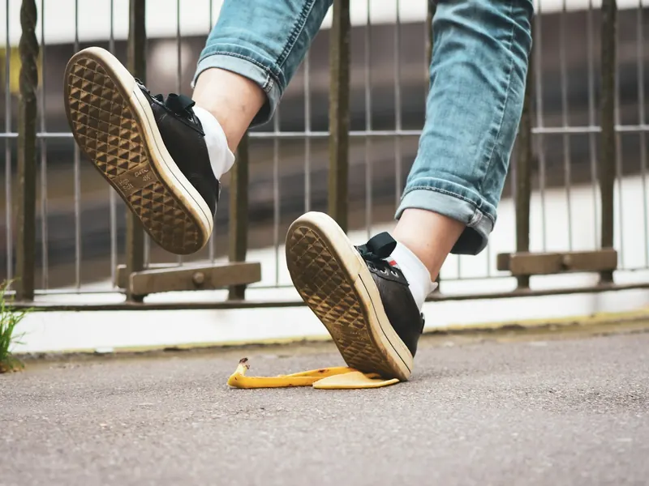
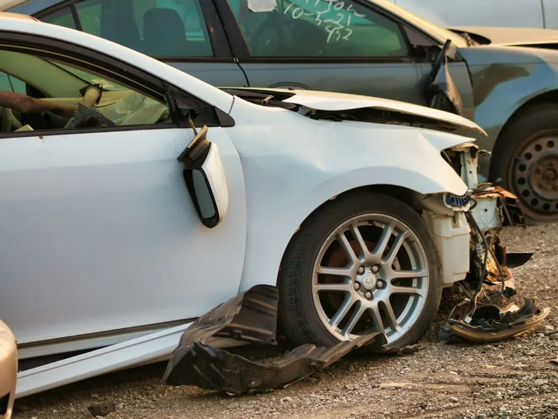
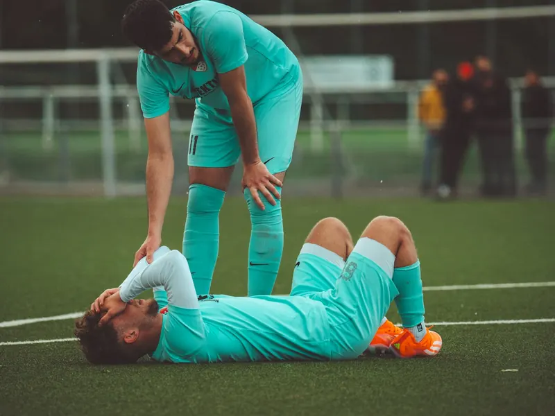
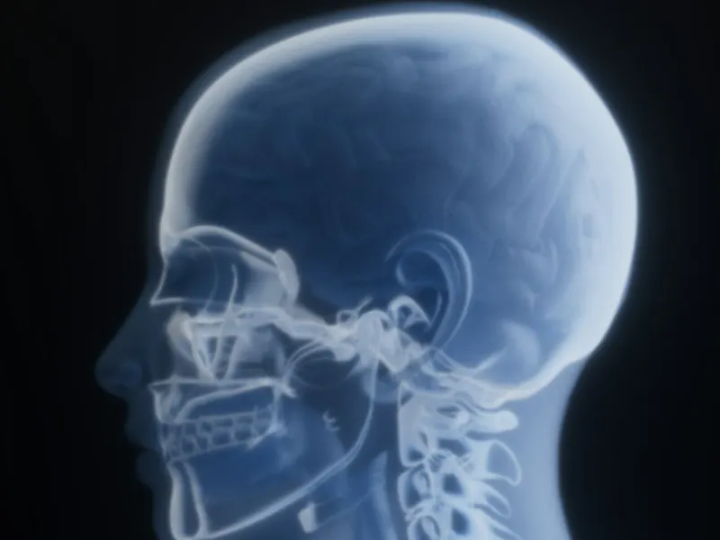
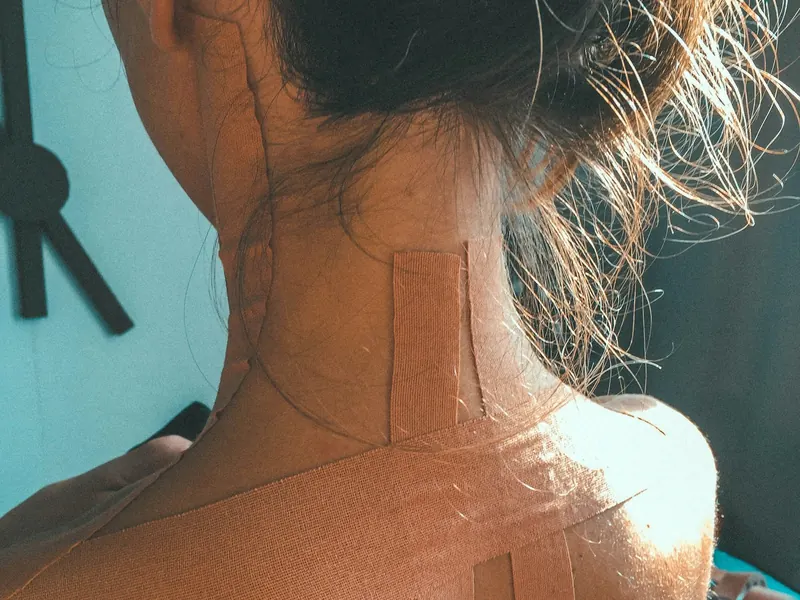
Расскажите врачу на консультации, даже если это было давно.
ЗаписатьсяДетям
Признаки, с которыми родители приходят на консультацию. Причины у них бывают разными - врач осматривает ребёнка и решает, показана ли процедура.
Врач оценит осанку, подвижность шеи и жалобы, расскажет, подходит ли ребёнку метод.
Записать ребёнкаКонсультация не заменяет наблюдение педиатра и невролога. Имеются противопоказания.
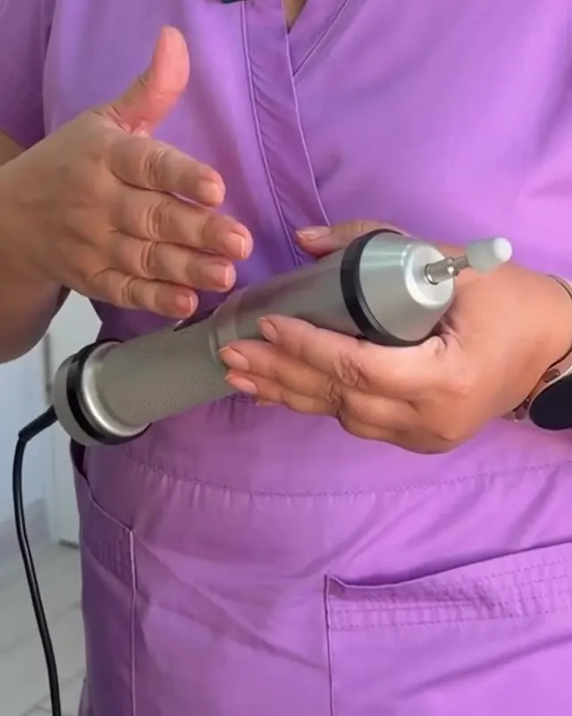
Метод Atlasprofilax
Швейцарская методика работы с мышцами в области первого шейного позвонка - атланта. Атлант соединяет череп с позвоночником и отвечает за подвижность головы.
Мышечное напряжение, нарушения осанки и ограничение подвижности шеи могут сопровождаться дискомфортом и головными болями. Причины бывают разными, поэтому важен индивидуальный подход.
Программа может включать несколько направлений реабилитации. Наша задача - разобраться в возможных причинах дискомфорта и помочь улучшить качество жизни.
Здоровье позвоночника начинается с внимательного отношения к своему телу.
Узнать, подходит ли вам методМетод на видео
Две короткие анимации: где находится первый позвонок, что даёт его смещение и как проходит коррекция.
Как проходит
Почему Atlant
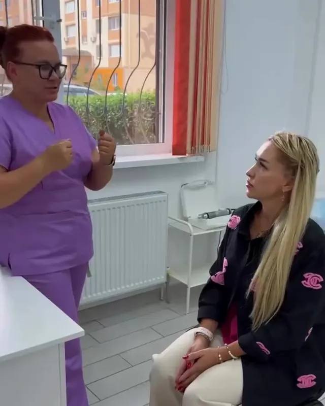
Врач
Врач атлас-терапевт, диплом врача с 2001 года.
Отзывы
Контакты
Ответим в течение 10 минут. WhatsApp или звонок.